Route Options¶
The router has some options to ease routing. Both connectivity routes and directed routes have options. Options are separated by a comma.
Sort options¶
These options specify which rectangle to route from. They are useful for connectivity route where the start rectangles are not specified.
onTopB¶
Put the bottom rectangle as start rectangle
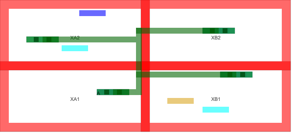onTopT¶
Put the top rectangle as start rectangle
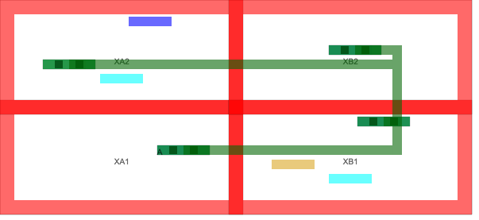onTopR¶
Put the right rectangle as start rectangle
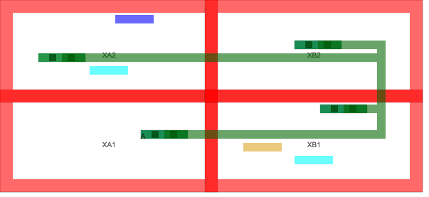onTopL¶
Put the left rectangle as start rectangle
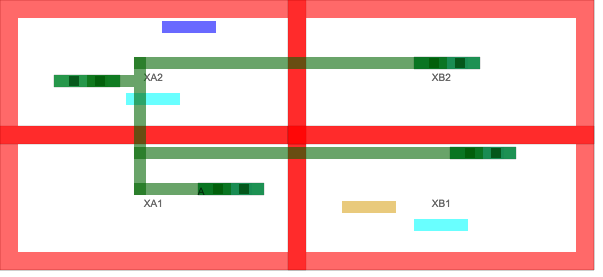Offset¶
These options can offset the routing rectangle to avoid nearby routings
offsethigh¶
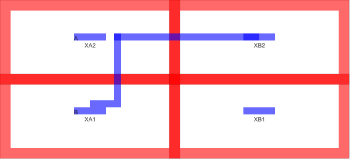offsetlow¶
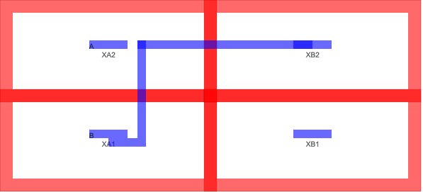offsethighend¶
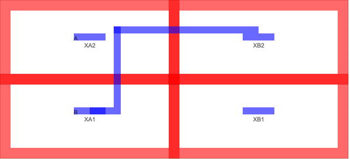offsetlowend¶
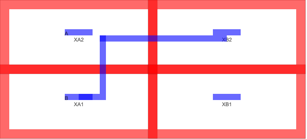Track¶
‘track’ can be used to specifiy how many grids the route is offset. It uses “ROUTE” and “horizontalgrid”.
For example ‘track4’, gives
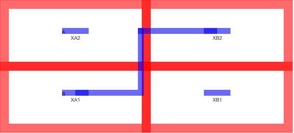For example ‘track8’, gives
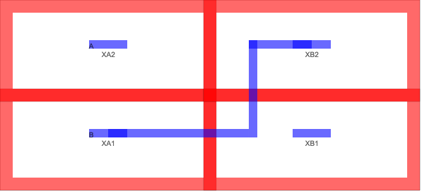Cuts¶
The number of cuts used by the route can be modified. Default is two cuts for the horizontal via.
\d+cuts¶
For example ‘3cuts’
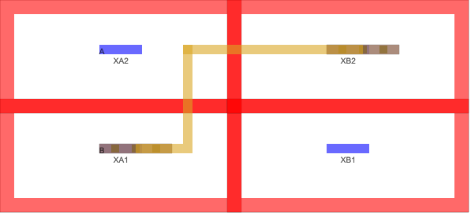And for example ‘5cuts’
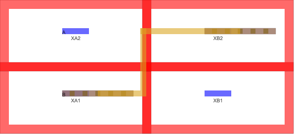